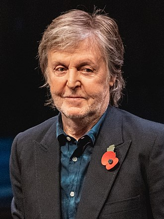

Paul McCartney

Sir James Paul McCartney, MBE (n. 18 iunie 1942) este un cântăreț și compozitor englez, care s-a remarcat inițial ca membru component al formației The Beatles. A scris și muzică de film, astfel că în 2002 a fost nominalizat la Premiile Oscar, Grammy și Golden Globe pentru muzica originală la pelicula Vanilla Sky/Deschide Ochii.Recunoscut ca un simbol al secolului 20, McCartney este menționat în The Guinness Book Of Records ca fiind compozitorul cu cel mai mare succes din istoria muzicii. El a înregistrat 29 de single-uri clasate pe locul întâi în clasamentele din Statele Unite, dintre care 20 interpretate de The Beatles, iar restul interpretate fie de formația Wings sau de el ca artist solo. Paul McCartney a produs și coprodus nu mai puțin de 50 de piese de top 10 – mai multe decât oricare alt producător – și este recunoscut și ca pianist, chitarist, toboșar și, bineînțeles, ca interpret. Piesele scrise împreună cu John Lennon rămân și astăzi printre cele mai bune din muzica pop și rock. De altfel, cele mai cunoscute cântece ale formației The Beatles au fost scrise de Paul. Printre acestea se numără - "Can't Buy Me Love", "Yesterday", "Hello Goodbye", "Hey Jude", și "Let It Be". Îl cunoaște pe John Lennon pe 6 iulie 1957 – la un picnic al bisericii – și a fost invitat să cânte în trupa acestuia The Quarrymen ca chitarist. În 1962, cu unele schimbări ulterioare, ia naștere formația The Beatles. De asemenea, McCartney are două piese în duet cu Michael Jackson: "Say Say Say" (care are și videoclip), în 1983, și "The girl is mine", cea din urmă apărând pe albumul lui Jackson "Thriller" [1982].
Una din cele mai celebre piese compuse de Paul, care a fost interpretată de peste 3.000 de artiști, este “Yesterday”. McCartney a afirmat că melodia i-a apărut în vis și că nu este sigur că este creația lui. Cu toate că Ringo Starr și George Harrison au părăsit pentru o scurtă perioadă trupa – în 1968 și respectiv 1969 – John Lennon a fost cel care a plecat definitiv din trupă la finele lui 1969. Pe 10 aprilie 1970 s-a anunțat public despărțirea trupei Beatles, chiar cu o săptămână înainte ca Paul McCartney să scoată primul sau album solo.
În acea perioadă prietenia dintre John Lennon și Paul McCartney era erodată după ani de rivalitate, însă cei doi s-au împăcat cu puțin timp înainte de uciderea lui Lennon pe 8 decembrie 1980. Paul McCartney – pe lângă cele enumerate până acum – mai este deținătorul unor recorduri mondiale: peste 184 de mii de oameni au plătit bilet pentru a-l vedea la Rio de Janeiro; în aprilie 1990, a vândut peste 20.000 de bilete la concertul din Sydney; în 1993, în doar 8 minute, împreună cu cei de la U2 a cântat piesa "Sgt. Pepper's Lonely Hearts Club Band"; în cadrul concertului Live 8 din 2005, aceasta va fi lansată la doar 45 de minute după ce a fost cântată și, în doar câteva ore, va ajunge pe locul 6 în topul Billboard. Paul McCartney a compus cea mai celebră piesă din toate timpurile – este vorba despre – “Yesterday” – care a avut până în prezent mai mult de 6 milioane de difuzări la radiouri, doar un Statele Unite. Nici pe plan financiar nu stă prea rău. Este cel mai bogat cântăreț din istorie cu o avere estimată la un miliard de dolari. În 1997 a primit distincția de cavaler din partea Coroanei Britanice, iar în 1999 a fost inclus în Rock and Roll Hall of Fame, ca artist solo.